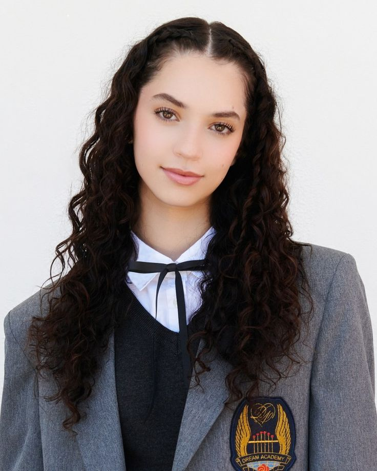

Daniela Andrea Avanzini Llorente (nascida em 1 de julho de 2004, Atlanta, EUA) é uma dançarina e cantora americana.
Filha de instrutores de dança latino-americana (sua mãe Ana Llorente, cubana, foi campeã mundial de ballroom), começou a dançar aos quatro anos e se mudou para Los Angeles para seguir carreira.

Em 2023, competiu em The Debut: Dream Academy, produzido pela HYBE x Geffen, classificando-se em 3.º lugar e garantindo uma vaga no grupo KATSEYE